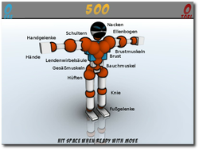
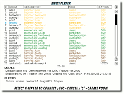
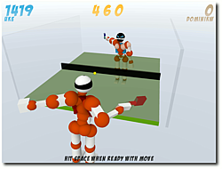
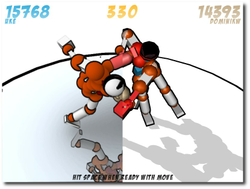
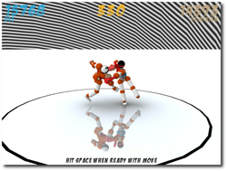

Toribash
Archivierte Anleitung
Dieser Artikel wurde archiviert, da er - oder Teile daraus - nur noch unter einer älteren Ubuntu-Version nutzbar ist. Diese Anleitung wird vom Wiki-Team weder auf Richtigkeit überprüft noch anderweitig gepflegt. Zusätzlich wurde der Artikel für weitere Änderungen gesperrt.
Zum Verständnis dieses Artikels sind folgende Seiten hilfreich:
Toribash  ist kein Spiel im eigentlichen Sinne, sondern eher eine Physiksimulation, in der man Kämpfe nicht mit simplen Mausklicks austrägt, sondern geschickt durch die Ausnutzung der Anatomie eines Körpers, der sich physikalisch korrekt verhält (Ragdoll
ist kein Spiel im eigentlichen Sinne, sondern eher eine Physiksimulation, in der man Kämpfe nicht mit simplen Mausklicks austrägt, sondern geschickt durch die Ausnutzung der Anatomie eines Körpers, der sich physikalisch korrekt verhält (Ragdoll  ).
).
Toribash lässt sich sehr leicht beschreiben: Bei einer Art Crash-Test-Dummy kann man verschiedenen Gelenken und Muskelpartien sagen, wie sich diese verhalten sollen (an- oder entspannen, beugen oder strecken). Nachdem ein Bewegungsablauf ausgeführt wurde, wiederholt man dieses Vorgehen so lange, bis das Zeitkontingent aufgebraucht ist oder man seinen gesamten Bewegungsablauf abgeschlossen hat. Auf diese Art kämpft man gegen Gegner, die die gleichen Möglichkeiten besitzen. Da man hier seine Taktik immer nur einen Schritt im Voraus programmieren kann, entstehen mitunter interessante Kämpfe. Zusätzlich kann das Spiel durch Mods erweitert werden, die weitere Gegenstände oder Umgebungen in das Spiel einbringen.
Im Singleplayer kann man seine Taktik an gegnerischen Dummys üben, im Mehrspieler-Modus Turniere austragen und wertvolle Punkte ergattern, die man bei einem Sieg erhält. Diese Punkte, Toricredits genannt, kann man dann im Torishop gegen kleine Gimmicks wie neue Texturen eintauschen. Bei einigen Treffern spritzt dabei etwas Comicblut durch die Gegend und es ist rein physikalisch auch kein Problem, seinen Gegner komplett auseinanderzunehmen.
Installation¶
Vorweg: Toribash ist Freeware, aber nicht Open Source! Auf der Linux-Downloadseite findet man sowohl für 32-Bit- als auch 64-Bit-Rechner fertige Pakete für Debian/Ubuntu (deb-Paket) und andere Distributionen.
Hinweis!
Fremdpakete können das System gefährden.
Für die Installation werden zuerst folgende Pakete benötigt [1]:
freeglut3
libglu1-mesa
libgl1-mesa-glx
liblua50
libsdl-mixer
libsdl-ttf2.0-0
 mit apturl
mit apturl
Paketliste zum Kopieren:
sudo apt-get install freeglut3 libglu1-mesa libgl1-mesa-glx liblua50 libsdl-mixer libsdl-ttf2.0-0
sudo aptitude install freeglut3 libglu1-mesa libgl1-mesa-glx liblua50 libsdl-mixer libsdl-ttf2.0-0
Danach kann man das heruntergeladene Paket ganz einfach per Doppelklick oder im Terminal installieren.
Hinweis:
Nach der Paketinstallation findet man das Spiel im Ordner /usr/games und kann durch Eingabe von toribash gestartet werden [6].
Hinweis:
Toribash ist komplett in Englisch gehalten und auch die Community verständigt sich größtenteils in Englisch.
Steuerung¶
Nach dem Start sollte man sich am besten das Tutorial, welches man im Hauptmenü unter gleichnamigen Menüpunkt findet, anschauen und durcharbeiten. Ansonsten kann man auch gleich den Singleplayer-Modus im Hauptmenü über "Single Player" starten.
Kamera¶
Zuerst soll die Kamerasteuerung erklärt werden:
W und D - Kamera rotieren
A und S - Zoomen
⇧ + A und ⇧ + S - Kamerahöhe verändern
Alternativ kann man die rechte Maustaste  oder die
Alt -Taste gedrückt halten und die Maus bewegen, um die Kamerasicht zu verändern.
oder die
Alt -Taste gedrückt halten und die Maus bewegen, um die Kamerasicht zu verändern.
|  |
| Die einzelnen Gelenke und Muskeln des Toris. |
Spielfigur¶
An der eigenen Figur, Tori genannt, gibt es zahlreiche Gelenke und Muskelpartien, welche man beeinflussen kann. Diese sind durch Kugeln dargestellt. Klickt man eine mit der linken Maustaste  an, verändert man deren Eigenschaft/Zustand:
an, verändert man deren Eigenschaft/Zustand:
"Relaxing" - Entspannen (Kugel ist grau)
"Contradicting" - Beugen (Kugel ist nur vorne orange)
"Extending" - Strecken (Kugel ist nur hinten orange)
"Holding" - Halten (Kugel ist orange)
Die orange Farbe gibt also an, an welcher Stelle sich ein Muskel anspannt.
Daneben gibt es noch einige Gelenke, die sich nach rechts oder links drehen können. Mit einem Klick auf die Hände können diese zugreifen und halten alles fest, sobald sie mit etwas in Berührung kommen. Ein erneuter Klick darauf lässt das Gegriffene wieder los.
Man kann die Werte auch mit der Tastatur umstellen, in dem man mit Maus über ein Gelenk fährt und dann folgende Tasten drückt:
X - Wechsel zwischen Entspannen und Halten
Z - Wechsel zwischen Beugen und Strecken
C - Wechselt alle Gelenke zwischen Entspannen und Halten
Alternativ kann man mit dem Mausrad, den Mauszeiger über einem Gelenk haltend, zwischen Beugen und Strecken wählen. Es gibt folgende Gelenke an der Spielfigur (wenn nichts dabei steht, bedeutet das die vier normalen Standardzustände oben):
"Neck" - Nacken
Hände (Achtung: Keine Bezeichnung beim Drüberfahren mit der Maus.)
"Wrist" - Handgelenke
"Elbow" - Ellenbogen
"Shoulder" - Schultern (alternative Zustände: Lowering/Heben und Raising/Senken)
"Pecs" - Brustmuskeln
"Chest" - Brustkorb (alternative Zustände: Right Rotating/rechtsdrehen und Left Rotating/linksdrehen)
"Lumbar" - Lendenwirbelsäule (alternative Zustände: Right Rotating/rechtsdrehen und Left Rotating/linksdrehen)
"Abs" - Bauchmuskel
"Glute" - Gesäßmuskeln
"Hip" - Hüften
"Knee" - Knie
"Ankle" - Fußgelenke
Den aktuellen Status eines Gelenks/Muskels sieht man am unteren Bildschirmrand, wenn man mit der Maus drüberfährt.
Bewegungsablauf¶
Im Singleplayer-Modus sieht man bei Standardeinstellungen oben in der Mitte des Schirms einen Zähler, der 500 anzeigt. Dies ist die verbleibende Framezahl, bis der Kampf zu Ende ist. Wenn man alle Gelenke so eingestellt hat, wie man es möchte, drückt man und der Zähler zählt eine bestimmte Schrittweite (Frames) weiter. Jetzt kann man erneut die Gelenke nach Belieben bewegen usw. Das macht man so lange, bis der Frame-Zähler heruntergelaufen ist.
Wenn der Zähler abgelaufen ist, ist der Kampf vorbei. Auf diese Art kann man seinen Tori wahre Tänze und Saltos vollführen lassen. Trifft man den Gegner dabei auch noch (anfangs eher zufälligerweise), leuchtet die getroffenen Partie rot auf und man erhält Trefferpunkte.
Weitere wichtige Tasten¶
Wem es nicht aufgefallen ist, man sieht „unter/hinter“ der eigenen Figur einen Schatten durchblitzen. Dieser vollführt genau das, was in den nächsten Abläufen nach den getätigten Einstellungen passieren würde. Man kann auf dieser Art also entscheiden, ob die Gelenkeinstellungen genau die Auswirkung auf die Figur hat, die man möchte.
Über die Taste B kann man auch einblenden, was die gegnerische Figur, Uke genannt, macht oder durch erneutes Drücken die Vorschau komplett deaktivieren. Mittels G erhält man wieder den eigenen Schatten („Ghost“).
Wenn ein Kampf beendet, der Zähler aber noch nicht abgelaufen ist, kann man die Taste P drücken, sodass die Zeit kontinuierlich abläuft. Möchte man doch noch etwas während der Bewegung korrigieren, drückt man erneut P , um den Ablauf anzuhalten und kann seine Figur wie oben beschrieben bewegen.
Mittels R kann man den Zug auch komplett beenden und sieht den gesamtem Ablauf, wie er auch nach Ablauf des Zählers präsentiert wird. Man kann aber keine Veränderungen mehr tätigen, wenn einem das Ergebnis nicht gefällt! Nach einem Kampf hat man die Möglichkeit, mit F eine Wiederholung („Replay“) abzuspeichern oder mit einen neuen Kampf zu starten.
Es ist nicht möglich, einen Kampf zu wiederholen und dabei zu beeinflussen. Einmal getätigte Bewegungen lassen sich also nicht widerrufen!
Spielmodi¶
Singleplayer¶
Wie oben bereits erwähnt gibt es den Einzelspieler-Modus, bei dem man gegen einen anderen Dummy namens Uke antritt, der sich (normalerweise) nicht wehrt. Vor allem zum Üben ist dieser Modus gut geeignet. Man kann den zweiten Dummy auch selbst bewegen und so gegen sich selbst kämpfen.
|  |
| Die Liste mit Toribash-Servern. |
Multiplayer¶
Wählt man im Hauptmenü den Eintrag "Multi Player", wird man zuerst nach einem Login gefragt. Sollte man noch kein Konto haben, kann man sich leicht eines anlegen; es wird nur nach Name und Passwort gefragt. Andere Daten muss man nicht angeben. Danach sieht man eine Liste mit Servern, die zum Kampf offen stehen. Auf verschiedenen Servern gelten verschiedene Regeln (siehe unten), die man sieht, wenn man mit der Maus über einen Eintrag fährt. Durch einen Linksklick auf einen Eintrag tritt man einem Spiel bei.
Es befinden sich meistens mehrere Spieler in einer Arena/Dojo. Da (normalerweise) nur zwei gegeneinander antreten können, landet man meist in einer Warteschlange. Hier hat man die Möglichkeit, den anderen Spielern erst einmal über die Schulter zu schauen.
Wenn man an der Reihe ist, muss man relativ schnell reagieren, denn man hat nur 20 Sekunden Zeit, seine Bewegungen zu planen. Oben steht wie immer die Frame-Zahl, die bis 0 herunterläuft, womit dann der Kampf vorbei ist. Darunter findet man meist eine kleinere Zahl, die angibt, wieviel Frames nach dem Ablauf der 20 Sekunden vergehen. Die Zahl kann dabei während des Kampfes auch variieren.
Gewinnt man ein Spiel, darf man erneut kämpfen, ansonsten wird sich wieder hinten in der Schlange angestellt. Wer einen eigenen Raum erstellen will, muss einfach nur C im Multiplayer-Menü drücken, einen Namen vergeben und hoffen, dass sich jemand dahin verirrt. Die Regeln werden aus den aktuellen Einstellungen übernommen. Es scheint auch noch Kämpfe mit Teams zu je zwei Spielern zu geben, diese wurde aber nicht getestet/gefunden.
Regeln¶
Jedes Spiel hat bestimmte Regeln. Diese kann man für sich im Singleplayer-Modus unter "Options -> Game Rules" einstellen. Dabei ist es möglich, in jedem Feld entweder eine oder mehrere kommaseparierte Zahlen einzustellen, oder durch die Eingabe von "0" oder "1" Optionen zu deaktivieren bzw. zu aktivieren.
Da man die Erklärung der Punkte nur nach ausgiebiger Suche im Netz findet (und dann auch nicht alle), folgt hier die Bedeutung der einzelnen Einträge:
"Mod": Dies ist der aktuelle Modname (siehe unten)
"Match frames": Gesamtanzahl der Frames pro Kampf (Zahl oben in der Mitte des Bildschirms)
"Turn frames": Anzahl der Frames pro Runde (d. h. nachdem man drückt, um seinen Zug zu beenden). Dies kann auch eine kommaseparierte Liste sein.
"Flags": ein Spiel besitzt verschiedene Optionen:
0 = None: keine Besonderheiten
1 = DQ: mit Disqualifikation
2 = Decap: mit Verlust von Körperteilen/Enthauptung
4 = No gripping: Greifen verbieten
8 = Fractures: mit Brüchen
Das heißt, will man z.B. Disqualifikation und Brüche erlauben, Greifen dafür aber untersagen, kann man - theoretisch - eine „13“ in das Feld eintragen. Theoretisch daher, da der Wert in dem Feld für alles außer „Greifen verbieten“ automatisch aus den anderen Angaben berechnet wird. Daher kann man dort einfach eine „4“ eintragen, wenn man Greifen verbieten will und der Rest wird automatisch berechnet.
"Dismemberment": 1 = Verlust von Körperteilen erlauben. Über den Grenzwert darunter kann eingestellt werden, wie leicht Körperteile vom Körper zu trennen sind.
"Fracture": 1 = Brüche erlauben. Brüche entstehen, wenn ein Gelenk über den Grenzwert weiter unten strapaziert wird. Dieses Gelenk färbt sich hellblau und kann nicht mehr bewegt werden.
"Disqualification": 1 = Disqualifikation aktivieren. Sobald ein anderes Körperteil außer Hände und Füße den Boden berührt, wird der jeweilige Spieler disqualifiziert.
"DQ timeout": Zeit in Sekunden, die ein Körperteil auf dem Boden verbleiben darf, ehe der Spieler disqualifiziert wird.
"DQ flag": 1 = Sofortige Disqualifikation, wenn man außerhalb des Ringes/Dojo den Boden berührt.
"Dismember Treshold": Prozentzahl, wie stark eine Kraft einwirken muss, bis ein Körperteil abfällt.
"Fracture Threshold": Prozentzahl, wie stark eine Kraft einwirken muss, bis ein Gelenk bricht.
"Dojo Type": 0 = quadratischer Ring, 1 = runder Ring
"Dojo Size": Größe des Dojo/Ringes in cm
"Engage Distance": Abstand in cm zwischen zwei Kämpfern beim Start des Kampfes
"Engage Height": Höhe in cm, in der sich die Kämpfer zu Beginn befinden
"Engage Rotation": Linksdrehung beider Figuren in Grad zu Beginn des Kampfes
"Engage Space": Abstand zweier Verbündeter in einem 2-gegen-2-Kampf
"Players Engage Position": Position im Raum für alle Spieler
"Players Engage Rotation": Drehung aller Spieler
"Damage": 0 = nur gegnerischer Schaden bringt Punkte / jeder Schaden (auch selbst verursachter) bringt Punkte / nur selbst verursachter Schaden bringt Punkte
"Gravity": Kräfte, die auf die Spieler von außen Einwirken (Standard ist Erdgravitation)
"Sumo": 1 = neben Händen und Füßen führen auch die Handgelenke auf dem Boden zur Disqualifikation
"Rpg": unbekannt
|  |
| Auch Tischtennis kann man spielen. |
Mods¶
Das Wort „Mod“ ist in der Computerspielewelt die Kurzform von Modifikation. Sie beschreibt eine Veränderung der eigentlichen Spielwelt oder des Spielprinzips.
In Toribash gibt es gibt verschiede Modifikationen, die das ursprüngliche Spiel mit zwei Figuren stark verändern. Man findet diese unter "Options -> Mods" oder kann sie auch in den Regeln (siehe oben) durch Linksklick auf den Modnamen auswählen. Vorinstalliert werden fast 1000 Modifikationen mitgeliefert, darunter auch Schwertkämpfe, Basketball, Rollschuhe, Akrobatik, mechanische Bullen und vieles vieles mehr. Hier kann man sich definitiv austoben.
Skripte¶
Unter "Options -> Scripts" findet man einige Skripte, mit denen man auch das Verhalten Ukes, dem gegnerischen Dummy, beeinflussen kann. Einige davon sind:
"random", "opener", "ukebot": Lässt Uke im Singleplayer-Modus nicht nur langweilig in der Gegend herumstehen.
"tooltip": Fügt Tooltips hinzu, die den Status der Gelenke zusätzlich zur unteren Bildschirmanzeige anzeigen.
"unloadscripts": Bisherige geladene Skripte wieder aufheben.
Hinweis:
Die Skripte "random", "opener" und "ukebot" führen eine zufällige Bewegung in jeder Runde aus, nachdem man die Leertaste gedrückt hat. Man kann also keine zufällige Animation sehen, wenn man gleich zu Beginn des Kampfes die Taste P drückt. Zusätzlich ist "ukebot" vom Bewegungsablauf etwas ruhiger als die anderen beiden, bei "opener" wirken die Angriffe dafür besser.
Replays¶
Nach dem Spiel kann man, wie oben erwähnt, eine Wiederholung des Kampfes speichern. Im Hauptmenü gelangt man über den Eintrag "Replays" zur Liste der gespeicherten Kämpfe. Durch Auswahl mit ⏎ lassen sich diese abspielen, aber nicht verändern.
Optionen¶
Neben den Regeln kann man auch noch einige Einstellungen zu den grafischen Optionen des Spiels einstellen. Da auch diese im Spiel selbst wenig erklärt sind, folgt hier eine Auflistung:
"Mouse Buttons": Anzahl der Maustasten, mit denen man die Gelenke beeinflussen kann. Stellt man hier „1“ ein, kann man mit der linken Maustaste
zwischen allen vier Zuständen wechseln. Stellt man „2“ ein, ist die linke Maustaste für das Entspannen und Halten zuständig und das Mausrad für das Beugen und Strecken."Background Click": 1 = Klick in den Hintergrund deselektiert die Spielfigur.
"Volume": Gesamtlautstärke
"Music": 1 = Musik aktivieren
"Music Volume": Musiklautstärke
"Fullscreen": Vollbild (die Auflösung des Fensters wird dabei nicht verändert!)
"Autosave replays": 1 = Wiederholungen werden automatisch im Ordner autosave gespeichert.
"Remember Game Rules": 1 = Behält die Regeln bei einem Neustart des Spiels bei. Ansonsten werden immer die Standardregeln geladen.
"Frame Skipping": unbekannt
"Shaders": 1 = aktiviert mehr Grafikeffekte
"Fluid Blood": Blutanimation
"Reflections": Spiegelungen auf dem Boden
"Soft Shadows": Spielerschatten
"Transparency": Transparente Texturen
"Ambient Occlusion": weichere Schatten
"Bump Mapping": Tiefeninformation bei Texturen
"Cel-Shading": Comic-Look (schwarze Umrandumg um Grafikelemente)
"Disable Graphics Reloading": unbekannt, soll angeblich bei Grafikproblemen helfen (siehe unten)
"Beginner": 0 = blendet den Tutorial-Punkt im Hauptmenü aus
|  |
| Rechts mit Standardeinstellungen, links mit allen Grafikoptionen aktiviert (ohne Cel-Shading sieht es aber besser aus). |
„Versteckte“ Optionen¶
Neben obigen Optionen gibt es noch einige Optionen, die man nicht über das Menü erreichen kann, sondern nur über die eingebaute Konsole. Will man sich mit anderen Spieler im Kampf oder in der Warteschlange unterhalten, drückt man T und kann danach etwas eintippen.
Über diese Eingabezeile können zudem verschiedene Kommandos absetzen, welche das Spiel beeinflussen. Hier ein kleiner Auszug:
/re 1024 768 - setzt die Auflösung auf 1024x768
/opt OPTION 1 - aktiviert eine bestimmte Option (Liste aller Optionen
)/help - blendet einige Befehle ein
/fullhelp - blendet alle Befehle ein (eine Liste gibt es im Forum
)
Torishop¶
Im Hauptmenü findet man auch den "Torishop". Für gewonnene Kämpfe erreichte Toricredits können dort gegen kleine Gimmicks für die eigene Spielfigur eingetauscht werden (zumindest theoretisch, siehe unten). So gibt es verschiedene Farben (für Blut, Gelenke, Spielfigur, Schatten etc.), Schlag- und Trittbewegungsstreifen oder Kopftexturen zu kaufen.
Auf der Webseite gibt es dazu noch einen größeren Shop , in dem man weitere Gimmicks findet. Gegen echtes Geld kann man auch Booster-Packs kaufen, die pro gewonnenem Kampf für mehr Toricredits sorgen.
Wichtig ist, dass diese ganzen Veränderungen an der Spielfigur nicht die Fähigkeiten der selben verbessern.
Probleme und Besonderheiten¶
Es gibt in Toribash leider auch einige Probleme bzw. Besonderheiten, die nicht immer ganz zu verstehen sind. Einige davon sollen hier erwähnt werden.
Kameraführung¶
Die Kamera ist, auch wenn man einen Spieler anwählt, nicht auf diesen fixiert, sondern nur auf die initiale Spielerposition. Das führt dazu, dass man die eigene Spielfigur nur noch sehr schlecht erreichen und bewegen kann, wenn diese in einem Kampf ihren Platz zu weit verlässt.
Hier hilft das Freecam-Skript (Link). Nach der Installation kann man die Kamera weiterhin mit den Tasten W , A , S , D bewegen. Zusätzlich gibt es aber auch noch I , J , K , L , mit denen man die Kamera seitwärts und vorwärts/rückwärts im Raum bewegen kann.
Alternativ kann man auch /opt smoothcam 0 nutzen, womit der eigene Dummy immer im Mittelpunkt des Schirms bleibt
Haltung nach Treffer¶
Nach dem Verlust eines Körperteils verlieren alle Gelenke ihren Zustand und gehen zu „entspannen“ über. Wenn man das übersieht, kann dies im nächsten Schritt unangenehme Folgen haben.
Regeländerung¶
In manchen Fällen kam es im Test vor, dass sich Regeln nicht ändern ließen. Es half dann, die aktuelle Mod mit den Regeln komplett neu zu laden.
Reihenfolge der Replays, Mods etc.¶
Ein großes Manko ist die fehlende Sortiermöglichkeit der Dateilisten. Es ist so gut wie unmöglich, die eigenen gespeicherten Wiederholungen in dem Wust von anderen wiederzufinden. Gegebenenfalls sollte man diese anderen alle vor dem Kämpfen aus dem Ordner replay entfernen.
Zusätzlich wird nicht abgefragt, wenn eine Wiederholung gespeichert wird, ob der Name bereits existiert. Man überschreibt so gegebenenfalls eine frühere Wiederholung, ohne dass man darauf hingewiesen wird.
|  |
| Der Himmel kann etwas gestreift sein, wenn man die Shader-Option aktiviert. |
Grafikprobleme¶
Auf dem Testrechner, einem 64-Bit-Intel-Core-2-Duo und ATI-HD4850-Grafikkarte unter Ubuntu 8.10, gab es leider mit den erweiterten Grafikoptionen ("Shaders") beim Hintergrund/Himmel Grafikfehler, sodass dieser manchmal schön gestreift war. Dies hat glücklicherweise nicht sehr vom Kampf abgehalten, es sah eben nur unschön aus. Die Option "Disable Graphics Reloading" im Setup-Menü (siehe oben) brachte hier keine Verbesserung.
Torishop¶
Der Torishop im Spiel selbst hat im Test leider gar nicht funktioniert. Weder ging der Link, noch konnten Farben oder Texturen gekauft werden. Über den Torishop auf der Webseite gelang der Kauf und die Aktivierung des Gimmicks dagegen ohne Probleme.
Tar-Archiv vs. Deb-Paket¶
So leicht die Installation per Deb-Paket auch geht, hat diese Methode auch ein kleines Problem: Es werde anfangs keine Skripte gefunden, obwohl diese im Ordner /usr/share/games/toribash/data/script/ vorliegen. Dies hat den Grund, dass der Ordner .toribash/data/script/ im Homeverzeichnis bevorzugt wird und in diesem keine Skripte liegen. Man muss diese also manuell kopieren:
$ cp -r /usr/share/games/toribash/data/script/ ~/.toribash/data/
Gleiches gilt auch für die Wiederholungen und Mods. Sobald im Homeverzeichnis ein Ordner dafür existiert, wird dieser bevorzugt und man muss ggf. manuell Dateien kopieren. Die per F gespeicherten Wiederholungen werden dabei immerhin standardmäßig in ~/.toribash/replays abgelegt, was das Problem mit der Reihenfolge der Replays umgeht.
Problematisch ist das Ganze aber vor allem deshalb, weil die Toribash-Version aus dem Tar-Archiv leider nicht diesen Homeordner nutzt, sondern nur in den entpackten Archiv-Ordner schaut. Dadurch sind die beiden Version inkompatibel zueinander, da man, obwohl das gleiche Spiel startet, man nicht auf die gleichen Daten zugreifen kann. Es ist schade, dass sich die Tar-Archiv-Version so verhält.
Community¶
Die Community ist weltweit vertreten und normalerweise während der Kämpfe sehr freundlich. So feuert man sich gegenseitig an und verabschiedet sich auch meist höflich mit einem „gg“ für „good game“ oder „gf“ für „good fight“. Wie überall gibt es leider auch dort ein paar Gestalten, die nur Ärger verbreiten wollen. In so einem Fall sollte man sich einen anderen Raum suchen.
Für Toribash-Anfänger empfiehlt sich das Wiki , in dem man auch Anleitungen für sehr viele Bewegungsabläufe („Moves“) und zahlreiche weitere Mods findet. Daneben gibt es auf diversen Videoportalen auch zahlreiche Tutorials für Sprünge, Schläge und Tritte.
Bei Fragen kann man sich auch an die Forengemeinschaft wenden oder im IRC auf dem Server irc.toribash.com, Raum #toribash nachfragen. Letztgenannter hat leider ein sehr niedriges Niveau, so wurde ich bei einigen Testfragen mehrfach abwertend als Noob bezeichnet und mit „GTFO“ verabschiedet. Einzelne haben immerhin relativ freundlich auf Fragen geantwortet.
Gewaltgrad¶
Zum Schluss soll noch kurz auf den Gewaltgrad in Toribash eingegangen werden. Hierbei muss nach den einzelnen Disziplinen unterschieden werden. Aikido-Kämpfe enden zum Beispiel fast immer unblutig, weil es nur darum geht, den Gegner umzuwerfen, sodass andere Körperteile als Hände oder Füße den Boden berühren. Schwertkämpfe zielen wie beim Sportfechten darauf ab, den Gegner an kritischen Körperstellen zu treffen und sind entsprechend blutiger. Immerhin kann man über die versteckte Option /opt blood 0 und /opt bloodstains 0 das Blut komplett deaktivieren.
Wer nicht nur zerstören, sondern erschaffen will, kann sich natürlich an eigenen Filmen versuchen, wie man sie auf verschiedenen Videoportalen findet. Diese zeigen sehr gute Bewegungsabläufe wie z. B. dieses Mirror-Edge-Video oder dieses Akrobatik-Video .

Infobox¶
| Toribash | |
| Genre: | Physik-Action |
| Sprache: | |
| Veröffentlichung: | 2007 |
| Publisher: | Nabi Studios |
| Medien: | Download |
| Läuft mit: | nativ |
- Erstellt mit Inyoka
-
 2004 – 2017 ubuntuusers.de • Einige Rechte vorbehalten
2004 – 2017 ubuntuusers.de • Einige Rechte vorbehalten
Lizenz • Kontakt • Datenschutz • Impressum • Serverstatus -
Serverhousing gespendet von